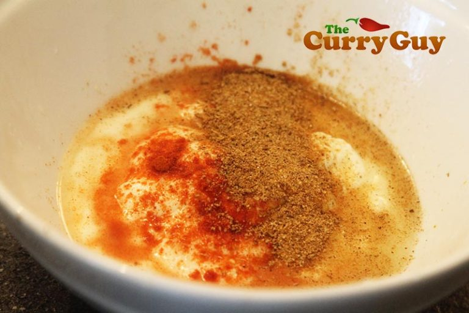

yoghurtsaus-
voor 250 ml

Dit is de makkelijkste saus die je maar kan bedenken.
Deze saus is makkelijk te bewaren in een knijpfles, maar dat hoeft natuurlijk niet.
Er gaat niets boven een gerecht naar een hoger niveau tillen met een jeerlijke zelfgemaakte saus.
Ingredienten:
- 500 g yoghurt
- sap van 1 limoen
- ½ tot 1 tl chilipoeder, naar smaak
- chaat masala en/of zout naar smaak.
stappen:
Klop alle ingredienten in een mengkom romig en glad.
Breng indien nodig verder op smaak met zout of andere specerijen.
Bewaar tot gebruik in de koelkast.